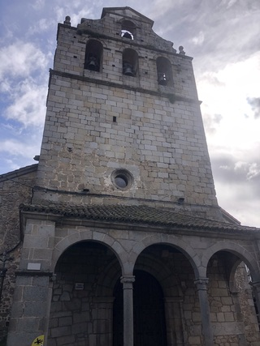

Colócate frente a la puerta gótico-mudéjar de la iglesia.
O escribe el nombre:
Interior: Retablos barrocos, capilla del Evangelio y arcos gótico-mudéjar únicos. Si la iglesia está cerrada, te va a interesar este link. Más info

Fachada: Entrada en piedra y ladrillo con campanario de cinco campanas.
🕯️ Reto: Enciende los vitrales
Ilumina la iglesia tocando los vitrales en el orden que marca la tradición. 🔍 Pista: el orden lo marca el escudo de San Martín: sangre, oro y cielo.
Fragmento del Mensaje:la fe del pueblo guía las almas...
QR en el pueblo: IGLESIA-1300
Dato Curioso: Se conserva una estela funeraria romana a la izquierda del portal. Sugerencia: si la fortuna os acompaña y la panadería está abierta podréis adquirir sus famosas perronillas... a lo mejor os dan alguna pista.